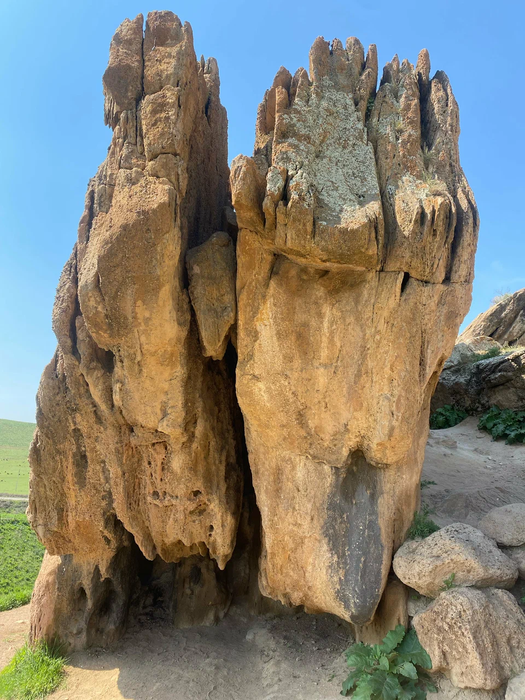
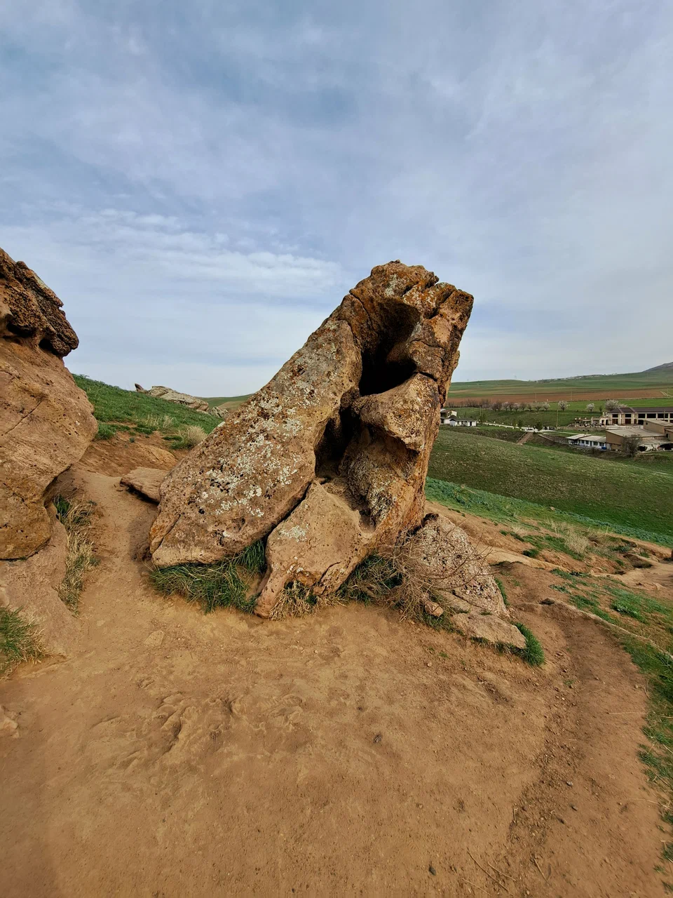
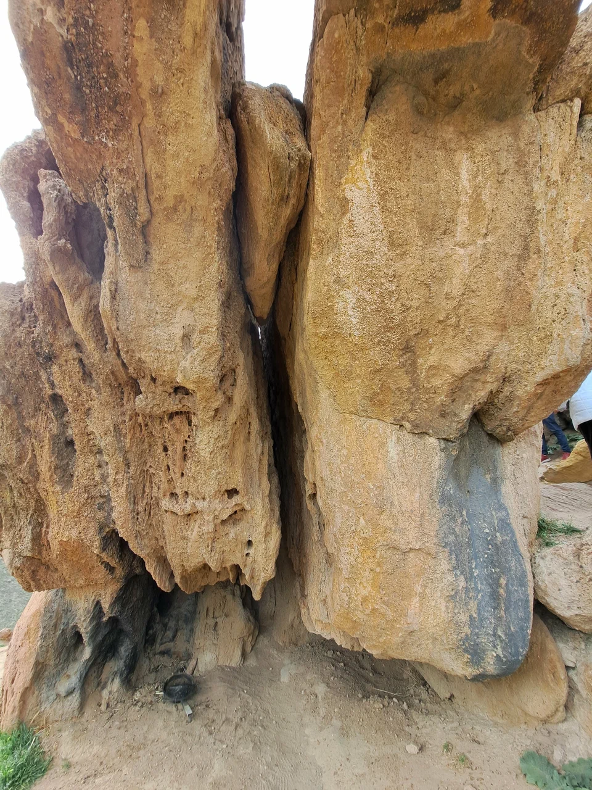
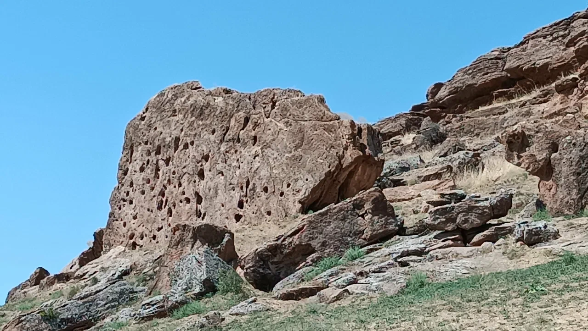

Түркістан облысы, Төле би ауданы, Қазығұрт тауының маңындағы киелі орын
Туркестанская область, район Толе би, священное место у горы Казыгурт
Turkestan Region, Tole Bi District, Sacred Site near Kazygurt Mountain
«Ғайып Ерен Қырық Шілтен» — қазақ және түркі халықтарының рухани-фольклорлық дүниетанымында ерекше орын алатын ұғым. Бұл атау халық арасында рухани қорғаушы, әулие, пір және ғайыптан жәрдем беруші қасиетті тұлғалар түсінігімен байланыстырылады.
Бұл киелі орын Қазығұрт тауының маңында орналасқан. Халық арасында бұл мекенге байланысты түрлі аңыздар мен әңгімелер сақталған. Ғайып Ерендер — бұл Құранда да айтылғандай, Алланың құпияларын білетін, халыққа жәрдем беретін киелі тұлғалар.
«Гаып Ерен Қырық Шілтен» — понятие, занимающее особое место в рухово-фольклорном мировоззрении казахского и тюркских народов. Это имя связано с представлениями о духовных защитниках, святых, пирах и сверхъестественных помощниках.
Это священное место расположено у горы Казыгурт. Среди народа сохранились различные легенды и рассказы, связанные с этим местом. Гаып Ерены — это святые существа, которые, как сказано в Коране, знают тайны Аллаха и помогают людям.
"Gayyip Eren Forty Shilten" is a concept that holds a special place in the spiritual and folk worldview of the Kazakh and Turkic peoples. This name is associated with the understanding of spiritual protectors, saints, pirs, and holy beings who provide supernatural assistance.
This sacred site is located near Kazygurt Mountain. Various legends and stories related to this place have been preserved among the people. Gayyip Erens are holy beings who, as mentioned in the Quran, know Allah's secrets and help people.
Қырық Шілтен киелі орнының суреттері
Фотографии священного места Қырық Шілтен
Photos of the sacred site Forty Shilten




Қазақ эпостары мен халықтық дүниетанымда Ғайып Ерен Қырық Шілтен батырларға және қиындыққа тап болған адамдарға рухани жәрдем беруші ретінде сипатталады. Халық арасында бұл тұлғаларға түнде көрініп, жол көрсеткен деген аңыздар бар.
Ертеде бұл жерде қырық қайратты батыр өмір сүріпті. Олар халықты жаудан қорғап, ауруды емдеп, жоғалғандарды таптырған. Қайтыс болғаннан кейін олардың рухы осы белгілердің арасында қалған деп сенеді.
Қазығұрт өңірі көптеген тарихи, діни және халықтық аңыздармен байланысты киелі аймақ ретінде белгілі. Бұл тау Нұх пайғамбардың тұсындағы тарихи оқиғалармен де байланыстырады.
Қырық Шілтен орнындағы бұлақ суы емдік қасиетке ие деп сеніледі. Халық арасында бұл судың көзі белгілердің арасынан шығатыны және оның ғайыптан келетіні туралы аңыздар бар.
Киелі орынға келгенде дәрет алу, тазалану және Аллаһтан жақсылық тілеу — бұл халық дәстүрінде маңызды орын алады. Белгілердің арасынан шыққан бұлақ суымен дәрет алу арнайы рәсім ретінде қарастырылады.
Халық арасында: «Кім шынайы ниетпен келіп, ғайып ереннің көмегін сұраса, Алланың қалауымен қиындықтары жеңілденеді» деген сенім бар. Бұл жерге келушілер дұға оқып, тілек тілейді.
В казахских эпосах и народном мировоззрении Гаып Ерен Қырық Шілтен описываются как духовные помощники, оказывающие помощь батырам и людям, попавшим в трудности. Среди народа есть легенды о том, что эти существа появлялись ночью и указывали путь.
В древности на этом месте жили сорок могущественных батыров. Они защищали народ от врагов, лечили болезни и находили пропавших. После смерти их души остались среди этих знаков, как верят люди.
Регион Казыгурт известен как священная территория, связанная со множеством исторических, религиозных и народных легенд. Эта гора также связана с историческими событиями времён пророка Ноя.
Вода родника на месте Қырық Шілтен, по верованиям, обладает целительными свойствами. Среди народа ходят легенды о том, что источник воды бьёт из-за знаков и приходит из сокрытия.
При посещении священного места омовение, очищение и молитва о благе Аллаха занимают важное место в народных традициях. Омовение водой из родника, бьющего из-за знаков, рассматривается как особый обряд.
Среди народа есть верование: «Кто искренне приходит и просит помощи гаып еренов, тому по воле Аллаха облегчаются трудности». Приходящие сюда люди читают молитвы и просят о благе.
In Kazakh epics and folk worldview, Gayyip Eren Forty Shilten are described as spiritual helpers who provide assistance to heroes and people in distress. Among the people there are legends that these beings appeared at night and showed the way.
In ancient times, forty mighty heroes lived at this place. They protected the people from enemies, healed diseases, and found the lost. After their death, their spirits remained among these signs, as people believe.
The Kazygurt region is known as a sacred territory connected with numerous historical, religious, and folk legends. This mountain is also associated with historical events from the time of Prophet Noah.
The spring water at the Forty Shilten site is believed to have healing properties. Among the people there are legends that the water source flows from between the signs and comes from the unseen world.
When visiting the sacred site, ablution, purification, and prayer for Allah's blessings hold an important place in folk traditions. Ablution with water from the spring flowing between the signs is considered a special ritual.
Among the people there is a belief: "Whoever comes with sincere intention and asks for the help of the Gayyip Erens, their difficulties are eased by Allah's will." Visitors here read prayers and make wishes.
Түркістан облысы, Төле би ауданы, Қазығұрт тауының маңы
Туркестанская область, район Толе би, у горы Казыгурт
Turkestan Region, Tole Bi District, near Kazygurt Mountain
Тазалықты сақтап, табиғатты құрметтеп, басқа келушілерге кедергі келтірмеңіз.
Соблюдайте чистоту, уважайте природу, не мешайте другим посетителям.
Keep clean, respect nature, and do not disturb other visitors.